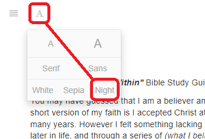
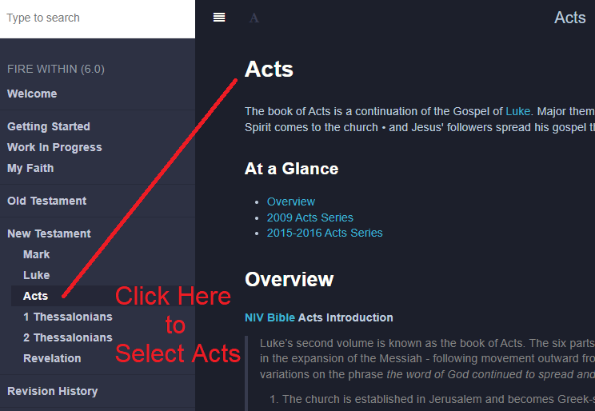
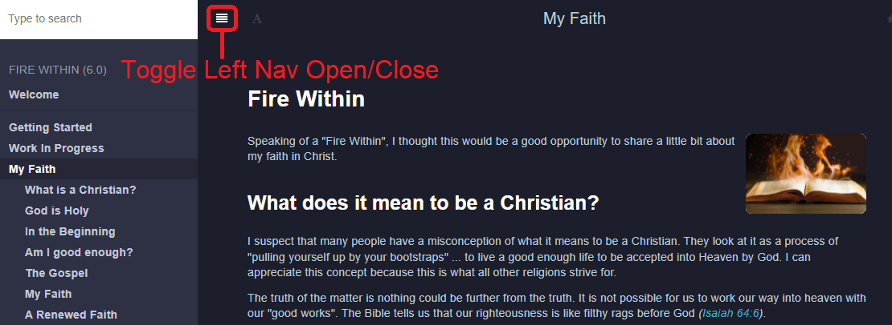
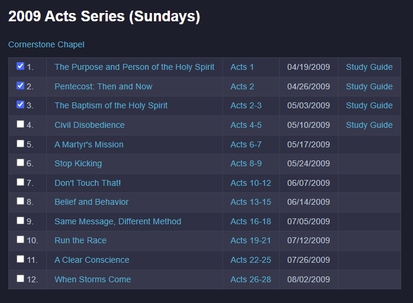
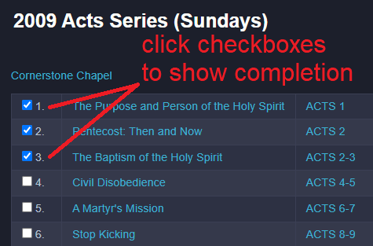
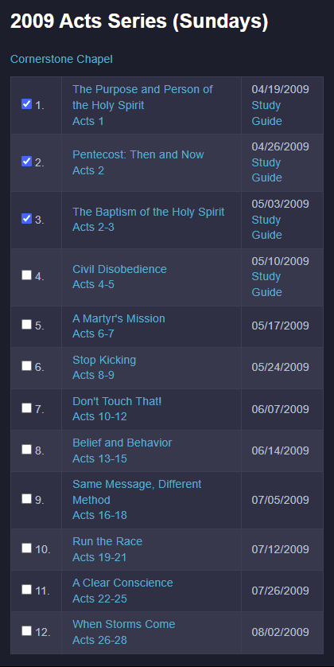

Getting Started
Overall the "Fire Within" Bible Study Guide is simple to use. It is, at it's core, simply a consolidated list of resource links to help you in your Bible Study. With that said, this section highlights a number of things that you should know to get the most out of this site.
At a Glance
- Quick Start
- Basic Appearance
- Going Home
- Left Nav Bar
- Scripture References
- Resource Links
- Where Am I?
- Cell Phones
- Diagrams
Quick Start
If you are visually inclined, watch this presentation on how to use Fire Within. It will walk you through all the details!
VIDEO CONTENT (Quick Links):
- 00:00 Teaser
- 04:14 Introduction
- 06:15 Getting Started
- 07:16 FireWithin URL
- 07:32 Style the Site
- 08:35 Page Navigation
- 10:14 Scripture Links
- 11:09 Bible Translations
- 12:20 Bible Study
- 16:28 Side Bar: External Sites Launch New Browser Tab
- 17:24 Side Bar: Completion Checkboxes
- 18:40 Devotions
- 22:22 Side Bar: Next/Prev Page
- 23:28 Working Daily Devotions
- 25:43 Finding Devotions by Scripture
- 27:57 Side Bar: Reddish Arrow of Scripture Reference - Quick Access to FireWithin's Book of the Bible
- 29:02 Related Sermon/Devotion
- 29:32 Side Bar: Tool Tip Hover
- 31:53 Cell Phone Usage
- 35:53 Using Multiple Devices
- 37:27 Keeping Multiple Devices In-Sync (automatically)
- 42:16 Syncing is EVEN Real-Time!
- 43:41 Specials
- 45:48 Christian Media
- 47:35 A Visual Character Guide
- 48:59 Memorizing Scripture
- 50:48 Revision History
- 52:24 Wrap Up
Basic Appearance
You can change the basic appearance of the site through the Text Menu, found in the upper-left of the page. You can change the • text size • display font • and color theme (I prefer the "Night" theme, giving you a dark mode).

Going Home
The Home menu (found in the upper-right of the page) will take you back to the wiiBridges home page.
Left Nav Bar
The books of the Bible are accessed through the Left Nav Bar. They are found in the Old and New Testament sections, which are themselves expandable. By simply clicking the desired book, you will will be taken to the study resources for that book.

The Left Nav Bar itself is expandable using the menu control found in the upper-left of the page. This control is a toggle that will either expand or contract the Left Nav Bar.

Scripture References
Throughout this site, there are over 3,000 scripture references!
As an example, consider: John 3:16 ↗
ALL scripture references are links that launch the YouVersion Bible App - so you can "Dig Deeper" electronically!
In addition, you will find a reddish-tinted arrow, just to the right of most scriptures. This is a convenience control that takes you to the FireWithin book for that scripture (in our example - John). This allows you to quickly research other resources that FireWithin has for that book of the Bible.
The only time you will not see this control, is if you are already on that page. In other words, if you are already in the book of John, it wouldn't make sense to say "take me to the book of John" :-)
Bible Translation
The YouVersion Bible App supports many different Bible Translations.
FireWithin allows you to specify which translation you wish to use through a central setting. This automatically impacts ALL 3,000+ scriptures found throughout the FireWithin site!
Check out the Bible Translation setting!!
Resource Links
As mentioned in the Welcome Page, this site is merely an accumulation of resource links that guide me through the books of the Bible. Because they are concisely organized, it helps in keeping track of where you are your study.

A word about the resource links found in this site ... they will consistently take you to another tab in your browser. This is done purposefully, so you won't loose your place in your study. To get back to this page, simply re-select it in your browser tabs.
Where Am I?
It can sometimes be hard to remember where you left off in your study ... especially when there are a large number of lessons in a series. For that reason, you will find a "Completed Checkbox" for each lesson of a Sermon Series. By simply clicking the checkbox, it will be remembered the next time you come back.

At a higher level, you can also keep track of which books of the Bible you have completed. This is summarized in both the Old Testament and New Testament pages, and also found at the top-right of each page that represents a book of the Bible.
Please Note that because you are a "Guest" user, these completed checks are retained on your local device. That means they will not follow you when you use multiple devices (say a laptop and a cell phone). In other words, it's really the state of the device you are using.
You can overcome this limitation by establishing a Fire Within user account. When you do this, your state is maintained in the cloud, and automatically syncs across all devices (which are signed-in to the same account).
For more information on this topic, go to the User Account section of the Settings page.
Please Note that because you have signed-in to the Fire Within site, these completed checks will automatically sync to all of your devices (that are signed-in to the same account) ... life is good!.
Cell Phones
Fire Within is capable of running on many different device types, including Mobile Devices (such as Cell Phones and Tablets).
Because of Fire Within's responsive design, it can handle devices with much smaller screens.
As an example, the Cell Phone Sermon Series will take on a slightly different appearance. It has a more vertical layout, with only 3 columns (instead of 5).

While Cell Phones have smaller screens to work with, they are useful in many different situations:
- You may want to audio stream a sermon on your commute or workout.
- You can always cast a sermon series from your phone to a TV!
- Remember: if your mobile device has You Version Bible App installed, all scripture references will be serviced by the Bible App (which has more features than it's web counterpart)!
More on Left Nav Bar
One of the biggest differences of Cell Phone usage is the Left Nav Bar - which behaves differently, depending on how much screen real estate you have:
For a Desktop/Laptop/Tablet, the Left Nav Bar will start out open, and remains open as you navigate the site.
For a Cell Phone, the Left Nav Bar will start out closed and automatically close on each menu selection.
As an example, if you need to navigate to a different top-level page, you will need to:
- expand the Left Nav Bar
- select the new top-level page
... the new page will display, and the Left Nav Bar will close
Diagrams
In some cases, a presentation or sermon series will use a detailed diagram to get their points across. When this happens (and I have the time), I will extract that diagram and make it available as one of the resources of this site.
These diagrams are typically fairly large, and may not be readable when restricted by the browser window. As a result, I have added the following features:
You can "hover over the diagram" with your mouse, and it will zoom/expand on that section. On a cell phone you can "press and hold" your finger to get the same effect.
You can also "click the diagram" to open it in a new tab of your browser.
- from there you can re-orient the browser window so it is visible concurrently with the video presentation
- you can also print the diagram by using your browser controls
Try this out for yourself with the following sample (taken from the Revelation series):